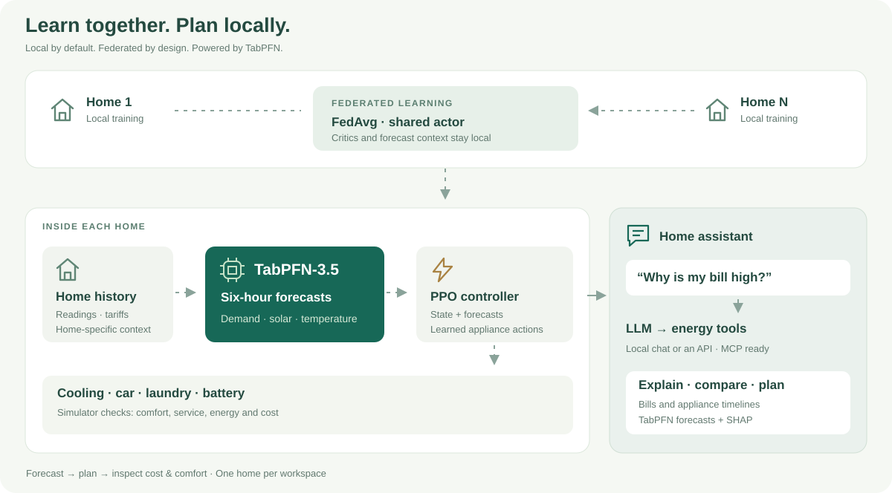
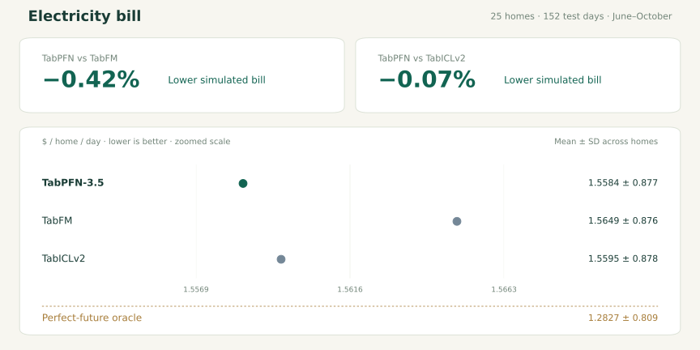

Forecast ahead.
TabPFN uses your home's labeled history to predict six hours of demand, solar and temperature.
TABPFN-3.5 · HOME ENERGY
Charge now, or wait for solar? Cool earlier, or pay more later? GridPFN learns from your home's history to forecast energy needs, compare appliance schedules and explain the tradeoffs.
Personalized HEMS · Federated learning · Agent + MCP · Local by default
TabPFN uses your home's labeled history to predict six hours of demand, solar and temperature.
A FedAvg-trained controller schedules cooling, charging, storage and washing within appliance constraints.
Inspect forecasts, compare simulated bills and comfort, or ask the assistant through structured tools.
HOW IT WORKS

MEASURE WHAT MATTERS
TabPFN, TabFM and TabICLv2: compare simulated bills, comfort and control against a perfect-future reference.

LEARN TOGETHER

YOUR HOME, EXPLAINED
Ask about bills, compare schedules and inspect the readings behind a TabPFN forecast.
20-second walkthrough · generated example household
TRAIN → EXPORT → SERVE
Train with the shared configuration, then point the assistant at a home model directory.
Local assistant & MCP setup ↗python train.py --config configs/gridpfn.toml
python hems_assistant.py \
--household results/personalized/models/home_27 \
--port 8770Research simulation, not live appliance control. Local execution is not a formal privacy guarantee. Household data and pretrained weights retain their own access and license terms.